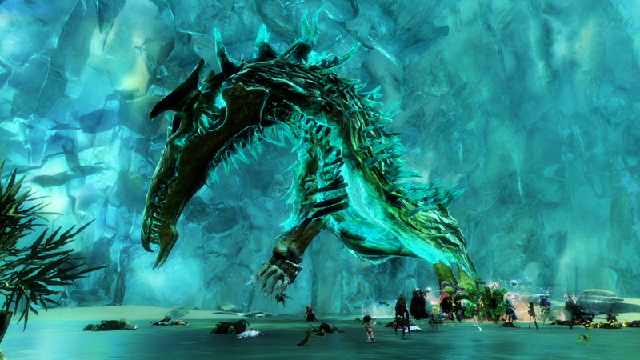

Meta events are events that have multiple parts to them. A meta event might have areas to capture or a NPC to escort. However, all meta events accumulate into a boss fight with special mechanics that must be followed in order to win. They give great rewards for winning are a lot of fun to do.
Meta events require a lot of people to be successful and a lot of the time someone will have a commander tag, which is something that lets you have a squad (party) of up to 50 players, it will also, unless you select to hide it, it will show up on the map and mini-map. You can join the squad if you want or you can just follow the group.
Meta events are timed, which is why you would need a lot of people to do them. They might be timed in phases, like you only have a certain amount of time to start the meta event, or a certain amount of time to defeat a boss.
Meta events are also time gated. This means that they are either only up every so often, like every 1 or 2 hours, or that they are always because the zone is the meta event, but the meta event might be progressed past the part that you need. An example of the zone being a meta event is the Dragon's Stand meta event in Dragon's Stand. It is an event where you push deeper into the zone with multiple events and you require at least 15 players in order to start it. You have 1 hour to start the event before you have to go to a different instance of the map. In order to get the electric wyvern, you have to complete the first part of the meta event in order to cause it to spawn. You have until the map changes to grab it before it disappears because you get kicked out of that instance of the map.

The Champion of the Ice Dragon or Drakkar and Spirits of the Wild is a meta event in the Bjora Marches zone of the Icebrood Saga mini-expansion. It starts by the Still Waters Speaking waypoint and it begins with your group escorting Jhavi Jorasdottir into an ice cave that goes underneath a frozen lake to fight against Drakkar, a champion of Jormag, who looks like some kind of undead frozen dragon. You then have to fight against Drakkar who is half in the wall of the cave. After you beat him, which is part of the first phase, Drakkar retreats deeper into the wall. You then have to protect Jhavi as she is destroying the wall so that you can give chase to Drakkar. After the wall is broken you find Drakkar in the wall of a bigger cave and have to fight him in three more phases: the first of these phases you fight him until he is at 60% health, at which point he attacks that area and you have to go to the middle and break the defiance bar on his claws, after that you have to go through a portal to fight a mini-boss to get Drakkar to become attackable again. He will do this again at 40% health and at 20% health. He becomes more powerful every time he is pushed into one of the final three phases. To make it harder, you also cannot go into another portal after you have gone into one, and you have only 35 minutes to fight Drakkar.